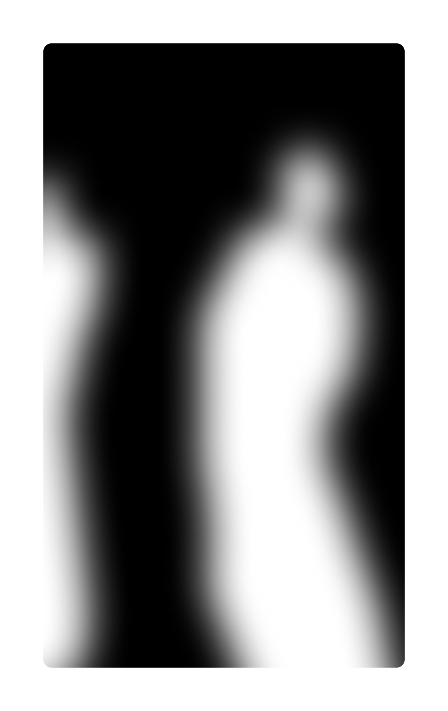

голограммы — мост
между двумя
мирами
наведите курсор
на блок и увидете призрака






ЗОНА АНАЛИЗА:
анализ воспоминаний
ЗОНА ПОРТАЛА:
«телепорт»
в воспоминания
ЗОНА ЗЕРКАЛ: с зеркалами
и стёклами, отражениями и тенями
(символизирует то, как человек
познает разные части себя,
погружаясь в воспоминания)
ЗОНА С ВОСПОМИНАНИЯМИ:
увешена тканями-экранами
на которые проектируются
вомпоминания человека (он их изучет,
погружается)
ЗОНА ПЕРЕХОДА: мягкая белая
комната, без углов; последний
этап перед встречей
ЗОНА ВСТРЕЧИ: встреча
с голограммой